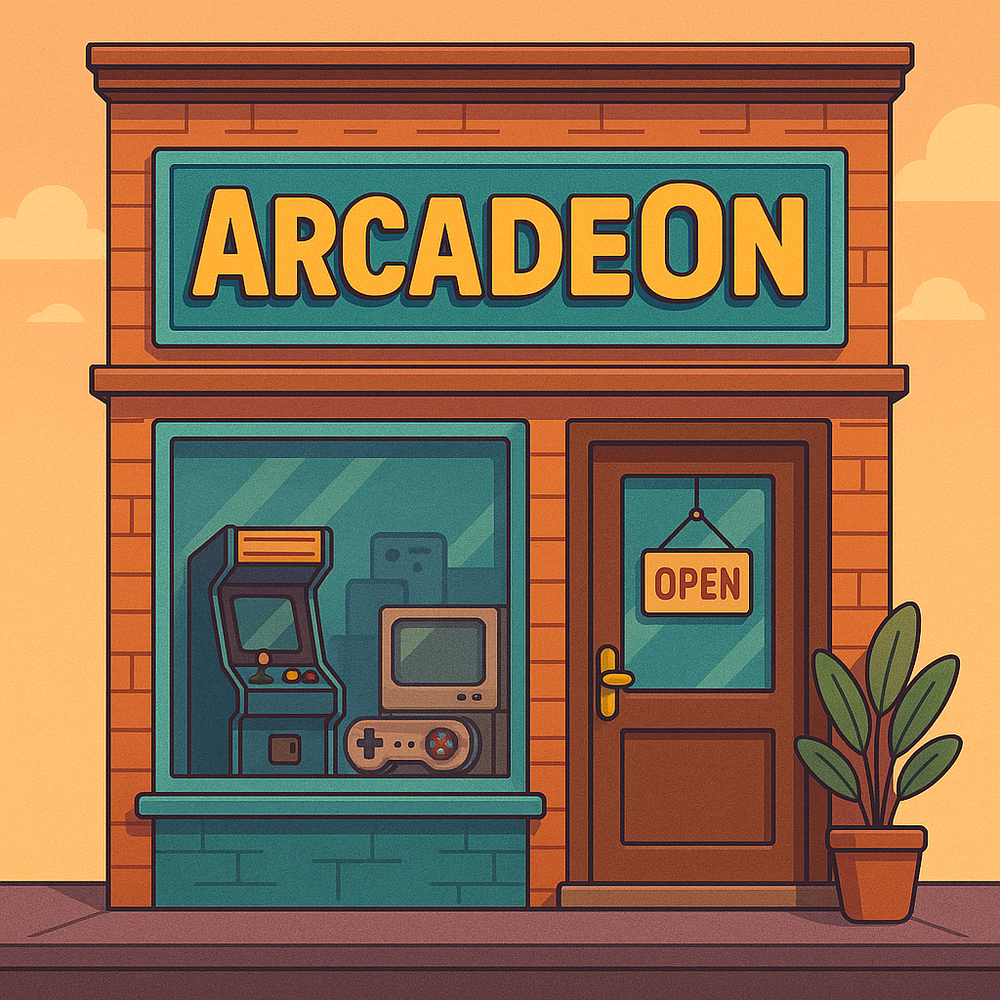
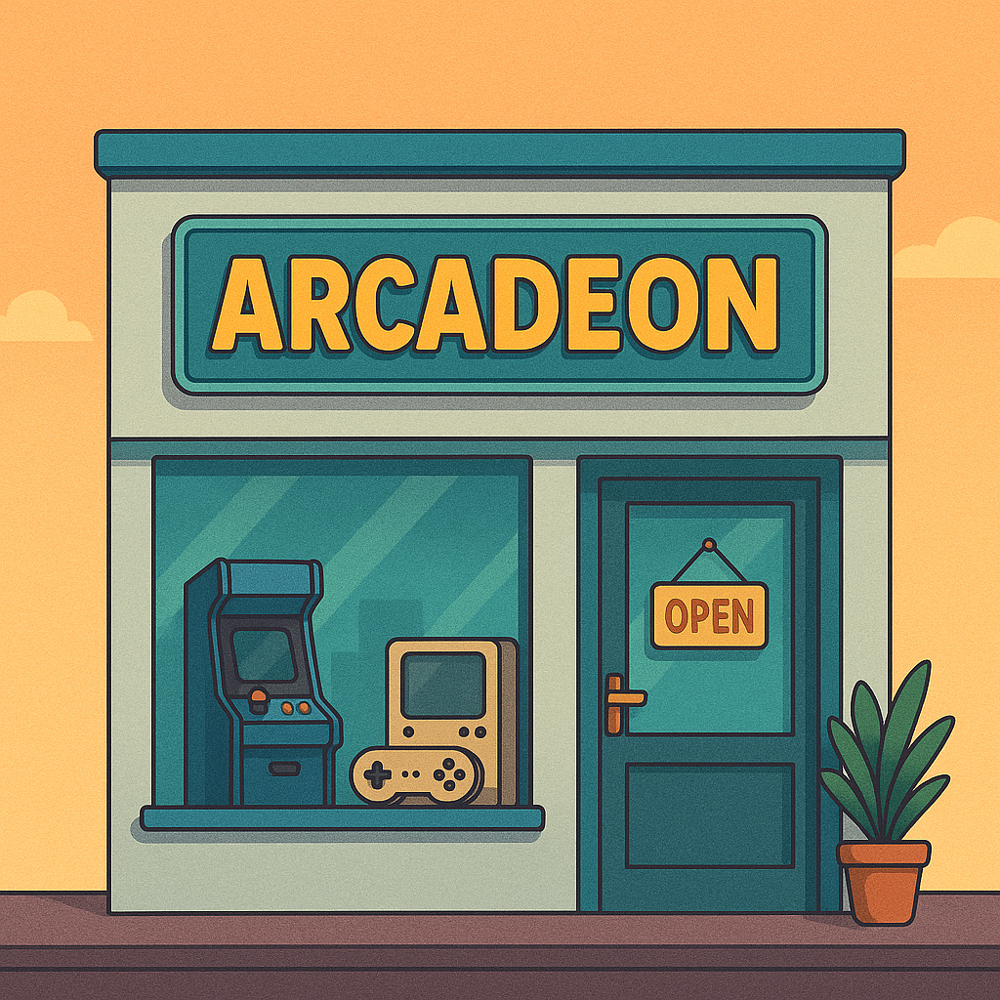

Sobre a ArcadeOn
Tudo começou com um controle na mão e uma tela piscando em 8 bits. Desde pequenos, somos apaixonados por videogames retrô — os clássicos que marcaram gerações, criaram memórias inesquecíveis e ainda hoje emocionam quem vivenciou a era de ouro dos games.
A ArcadeOn nasceu em 2017, quando decidimos transformar nossa paixão em algo maior: um lugar onde os fãs de verdade pudessem encontrar consoles clássicos, cartuchos originais, acessórios raros e aquele clima gostoso de locadora de bairro. Nossa primeira loja foi pequena, com prateleiras improvisadas, mas cheia de alma. Era no fundo de uma galeria em São Paulo, e logo virou ponto de encontro de colecionadores, curiosos e apaixonados por games.
O sucesso foi tão grande que, em 2019, inauguramos a segunda unidade, desta vez no coração da cidade. Com mais espaço, começamos a organizar campeonatos de Street Fighter, noites temáticas de Super Nintendo e eventos com fliperamas, reunindo gente de todas as idades para celebrar a cultura gamer retrô.
Em 2023, realizamos mais um sonho: abrimos a terceira loja, com um mini museu de consoles antigos, lounge retrô com televisões de tubo, e até aluguel de cartuchos para quem ainda joga em consoles originais. Mais que uma loja, nos tornamos um espaço de experiências, encontros e boas lembranças.
Hoje, a ArcadeOn é referência nacional quando se fala de games clássicos. E tudo isso só foi possível porque, para nós, jogar é reviver. É lembrar da primeira vez que você zerou Sonic, do barulho do cartucho do Mega Drive, das madrugadas tentando passar de fase no Mario.
Se você também sente essa conexão com o passado, seja bem-vindo.
A casa é sua.